Comme dans beaucoup de pays touristiques, les visiteurs s’en tiennent souvent aux mêmes sites et activités. On ne saurait alors trop vous recommander d’essayer de faire le tour des petits villages du pays. Là où vous découvrirez une nouvelle beauté de la Tunisie, des « petits coins du Paradis ».
Sidi Bou Said
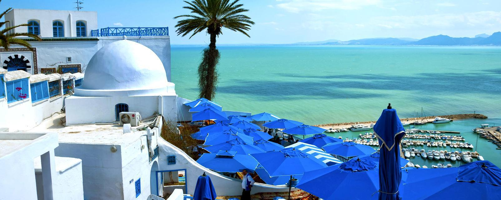Régulièrement cité parmi les plus beaux villages du monde (notamment dans le Business Insider en 2017), Sidi Bou Said, à quelques kilomètres de Tunis, cristallise la magnificence de la Tunisie. Avec ses bâtisses blanches, ses petits cafés et restaurants, ce village est un joyau. Sa position géographique le rend d’autant plus attractif puisqu’il surplombe la mer avec une majesté qui n’appartient qu’à lui.
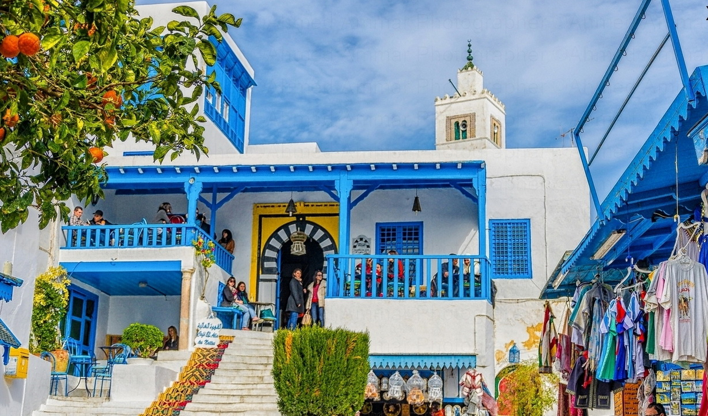Kesra
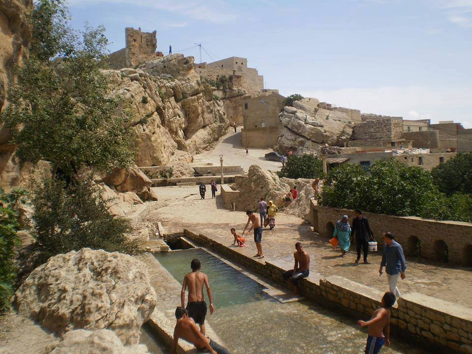Kesra est un village berbère du centre-ouest, le plus haut de Tunisie avec 1100 mètres d’altitude, célèbre pour ses monuments mégalithiques, sa cascade d’eau et ses escaliers taillés dans le roc.
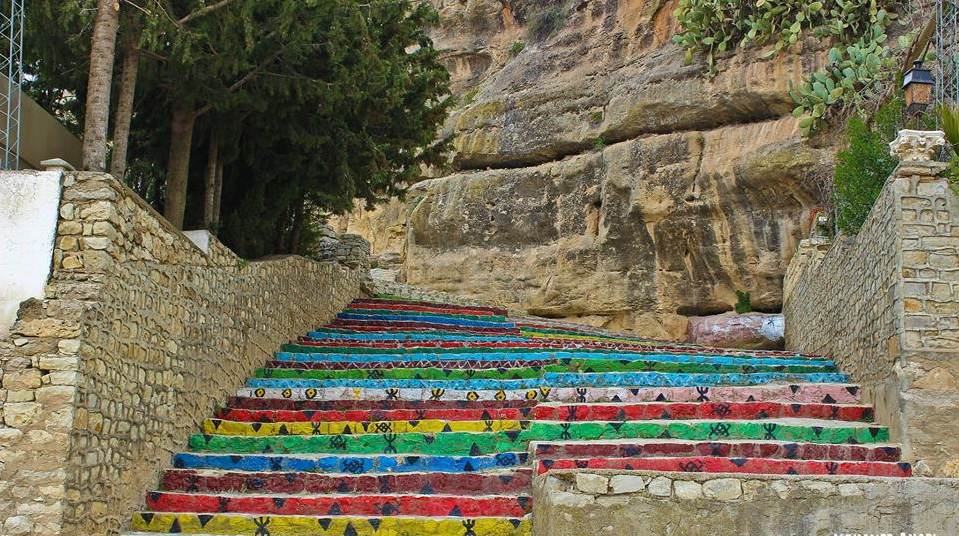Chenini
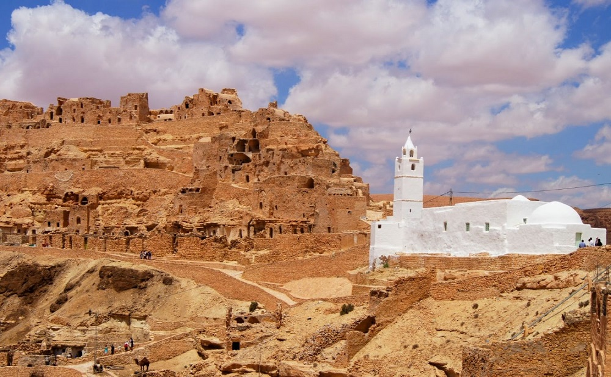Un autre village troglodyte près de Tatouine, célèbre pour sa belle mosquée mais aussi pour avoir accueilli en son temps, le tournage de Star Wars. Chenini qui a d’ailleurs donné son nom à l’une des lunes citées dans les films.
Oued Zitoun
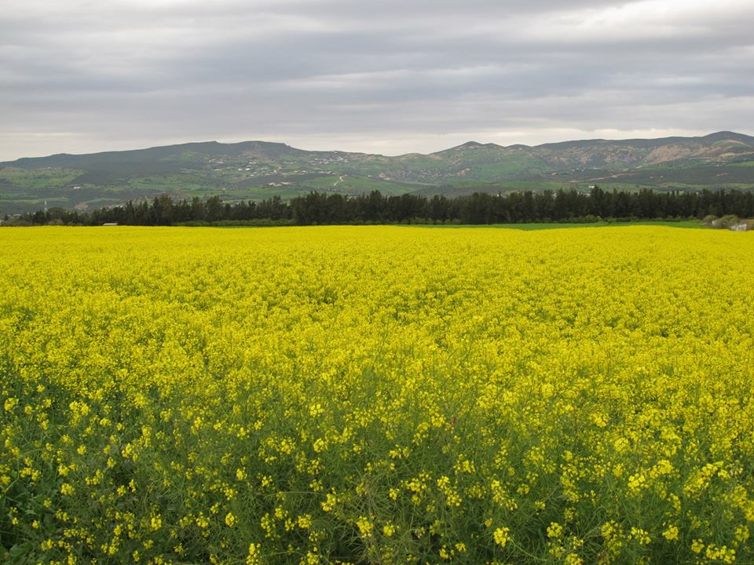Une destination phare pour les amateurs de nature et de randonnée. À Oued Zitoun, au Sud-Ouest de Bizerte, où la beauté des chutes d’eau n’a d’égal que la bienveillance des habitants.
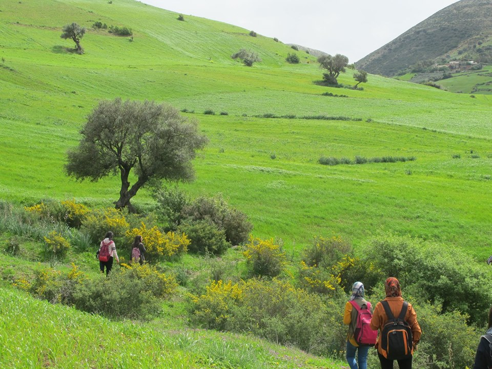 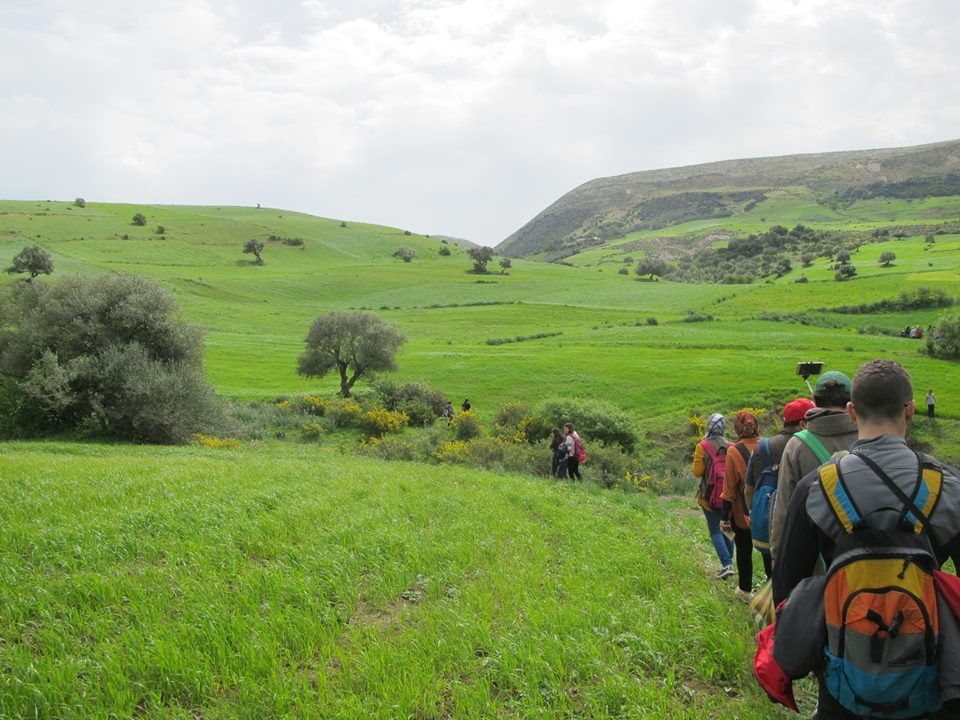Matmata

Dans le Sud, Matmata est unique en son genre. Un village composé d’habitations troglodytes disposées autour d’un grand puits. Star Wars notamment, y a été tourné. C’est l’un des principaux pôles touristiques de Tunisie.
Takrouna
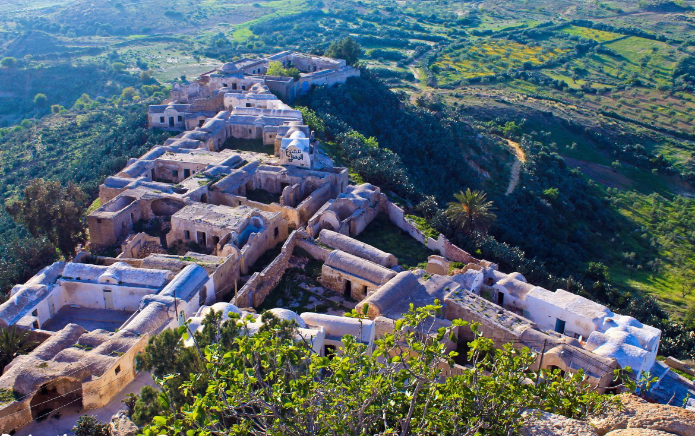Un beau village berbère construit sur un rocher qui bénéficie d’une superbe vue sur les environs. Seulement quelques familles y vivent encore, ce qui en fait un endroit privilégié pour découvrir la Tunisie en dehors des autoroutes touristiques.
Tamerza
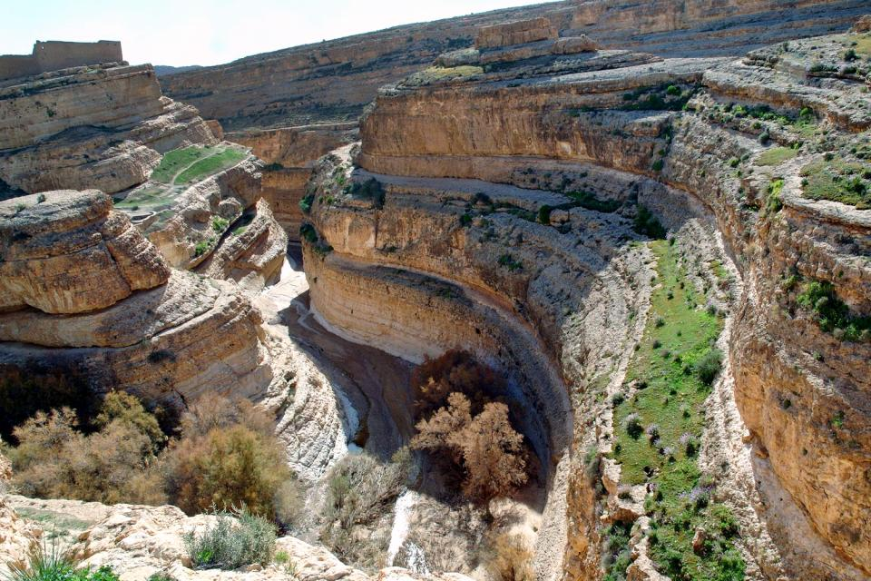C’est un endroit hors du temps, où la nature sert d’écrin et où le soleil réchauffe les cœurs et les corps. Le genre de coin qui donne envie d’écrire de la poésie.
Guermessa
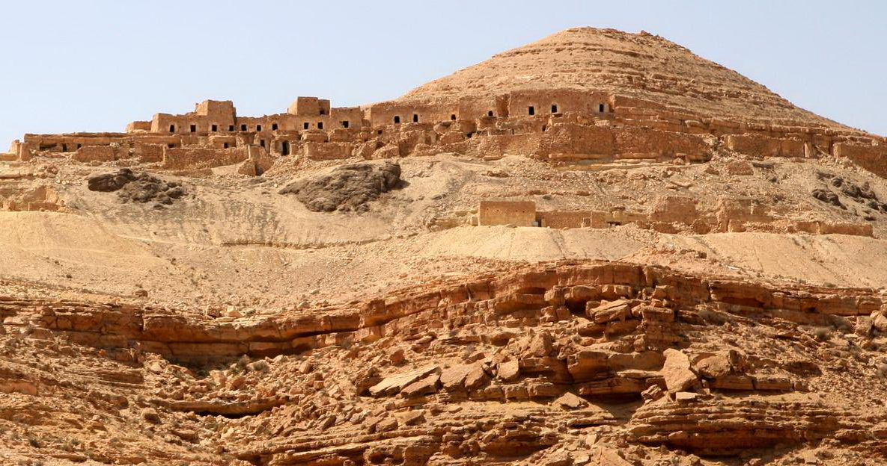Voilà justement l’un des fameux ksour de Tatouine. À Guermessa, on peut admirer des maisons traditionnelles mais aussi profiter de l’artisanat.
Douiret
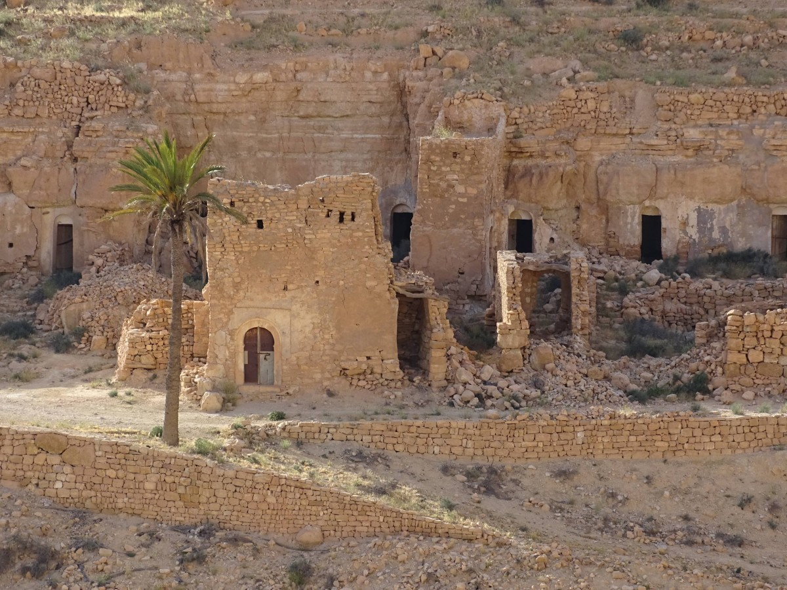Un endroit lui aussi riche en habitations des plus typiques qui n’est habité que par deux familles. Si vous cherchez à sortir des sentiers battus, c’est là qu’il faut aller. Voilà superbe endroit, au sommet d’une colline, qui raconte de bien des façons l’histoire de la Tunisie et de ses habitants.
Testour

Toujours belle, authentique et accueillant, le village Testour promet à ses visiteurs de passer de moments uniques et inédits, pour amateur de moments forts ou cherchant détente et relaxation, vous trouverez surement votre bonheur à Testour.